Introduction to Space Technology
Space Technology is the backbone of modern scientific advancement. Satellites orbit Earth to provide communication, navigation, weather forecasting, military surveillance, and scientific research. Communication satellites enable television broadcasting and internet services across continents. Navigation satellites power GPS systems that guide airplanes and ships with high precision. Organizations like NASA and ISRO continue to innovate in this field. With the rise of small satellites and CubeSats, space missions have become more affordable.
Rocket Propulsion Systems
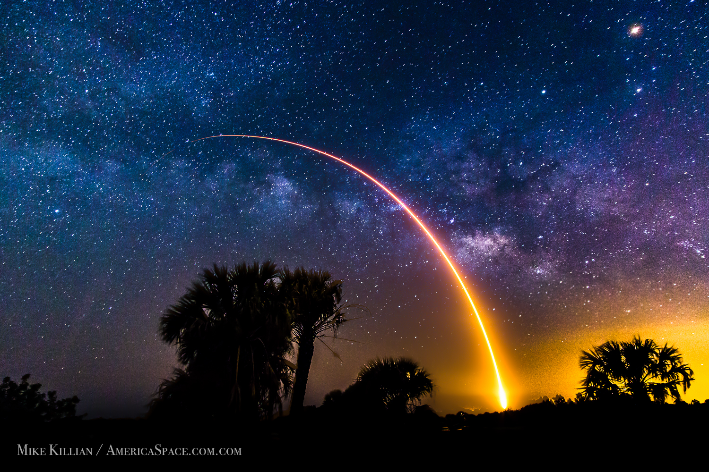
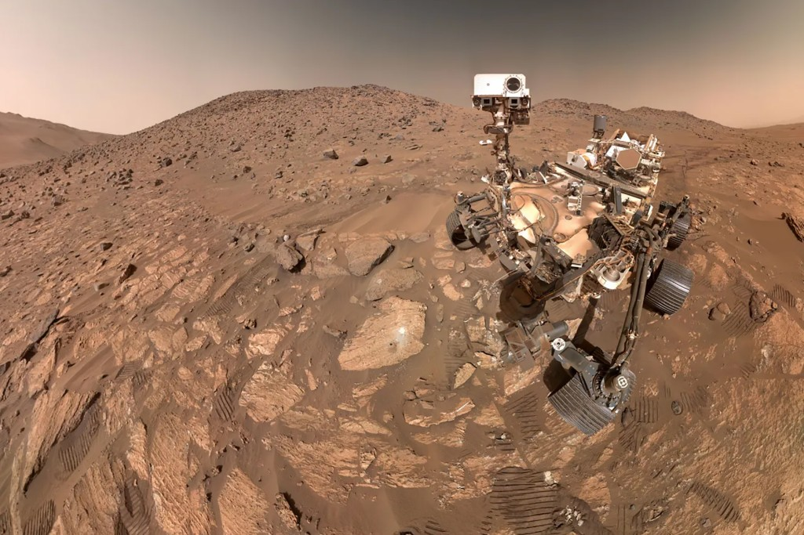
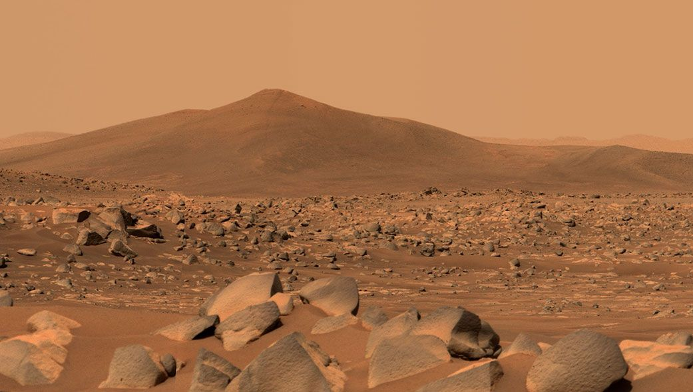
Rocket propulsion enables spacecraft to escape Earth’s gravity. Rockets operate based on Newton’s Third Law. Different propulsion systems include solid fuel rockets, liquid fuel engines, and hybrid engines. Modern reusable rockets have revolutionized space travel by reducing costs. Advanced systems like Ion Propulsion are used for deep-space missions.
Space Exploration Missions
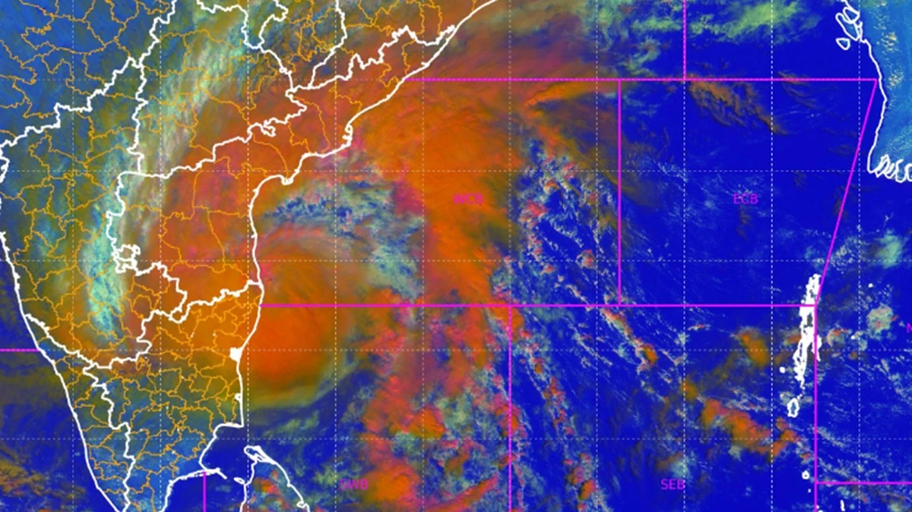
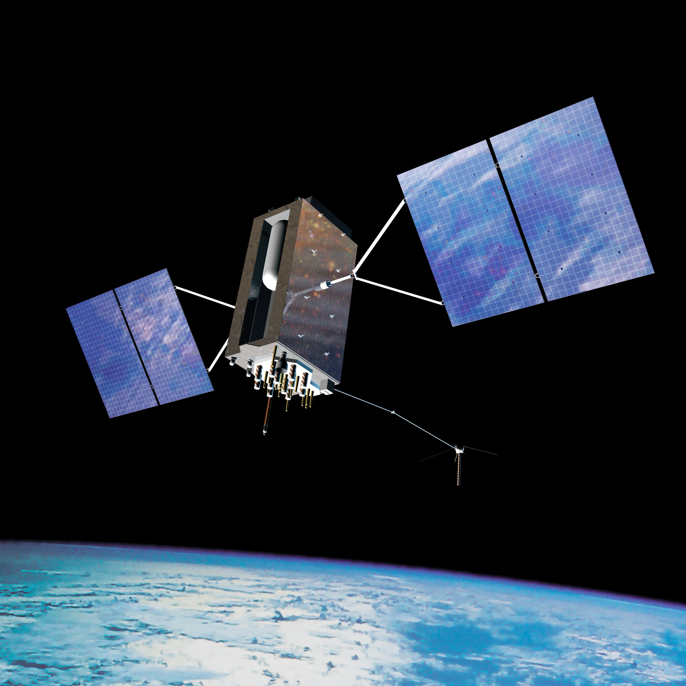
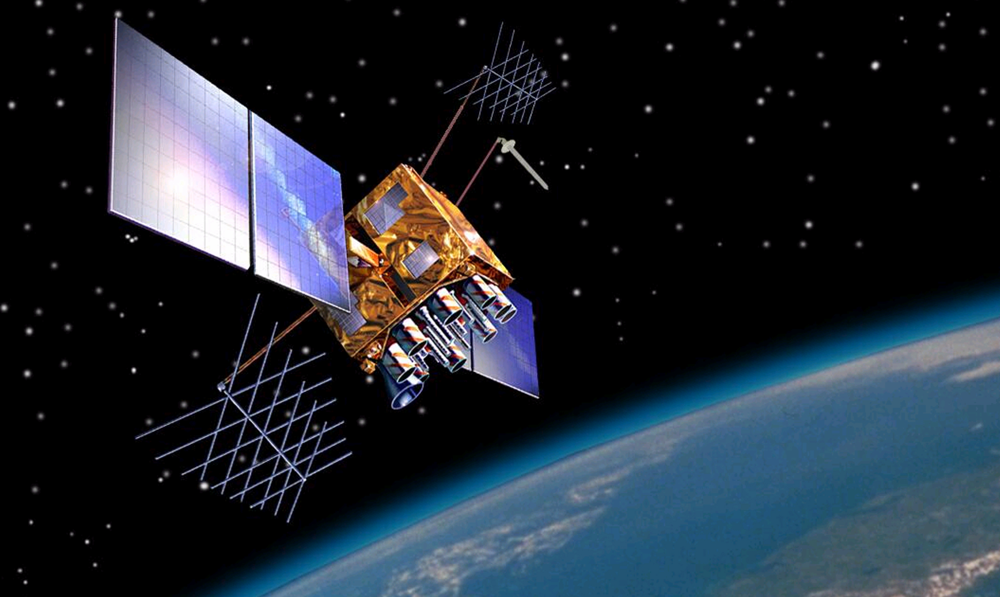
Space exploration missions study celestial bodies like the Moon and Mars. Robotic missions collect soil samples and analyze atmospheres. Human missions focus on long-term habitation and research. Agencies such as ISRO and NASA have expanded our knowledge of the universe. Exploration inspires technological innovation that benefits life on Earth.
Space Robotics and AI

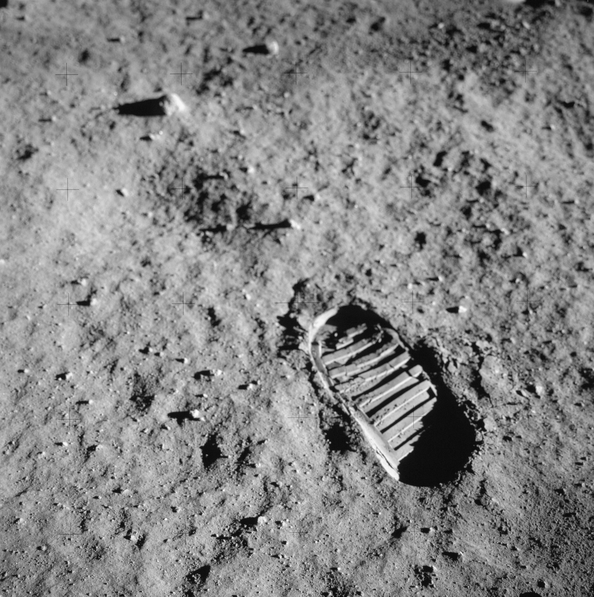
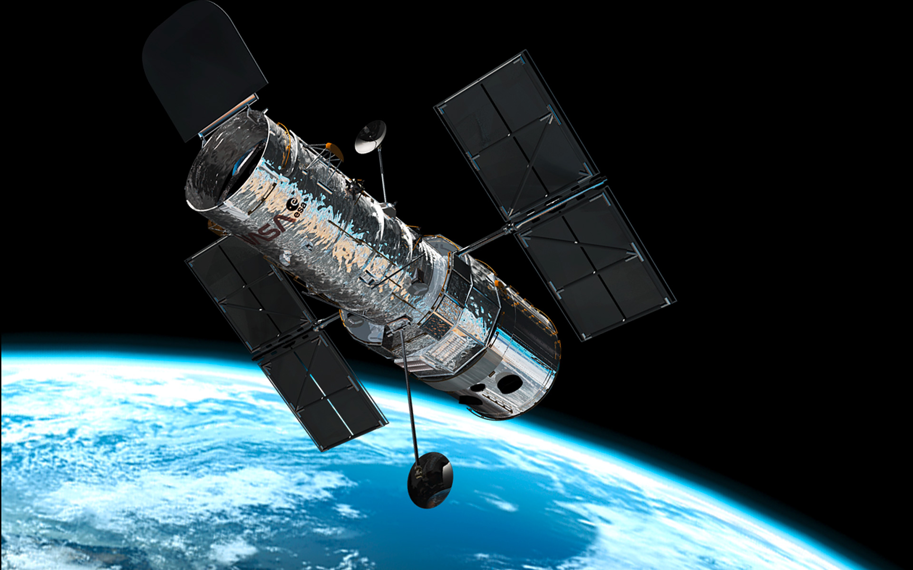
Artificial Intelligence plays a critical role in modern space missions. Space robots perform repairs and operate in extreme environments. AI systems enable autonomous navigation for Mars rovers. Technologies like Machine Learning help detect anomalies in spacecraft systems.
Space Stations and Habitats
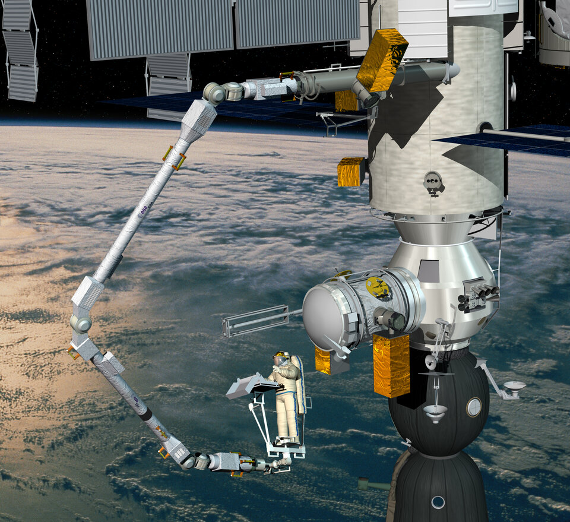
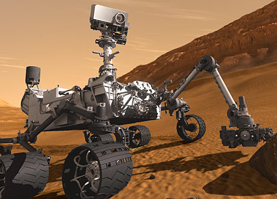
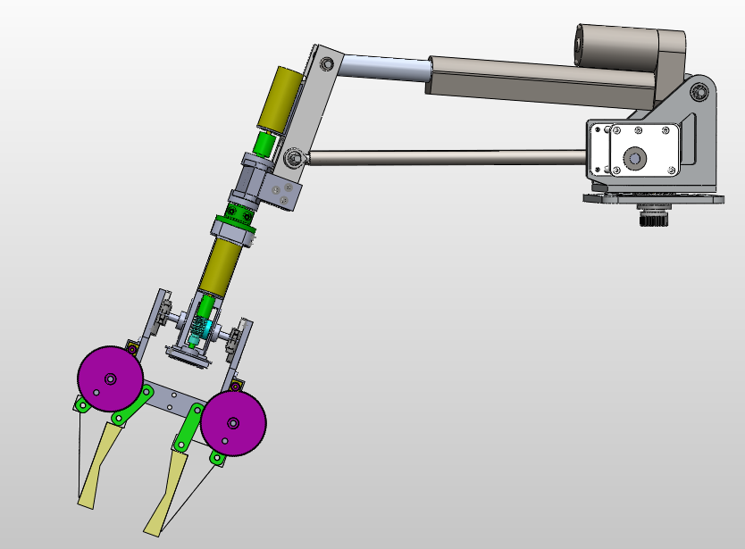
Space stations serve as laboratories in orbit. The International Space Station allows scientists to conduct experiments in microgravity. Future lunar and Mars habitats aim for long-term human survival. Engineers are developing advanced life-support systems for sustainable living in space.
Space Sustainability and Debris Management
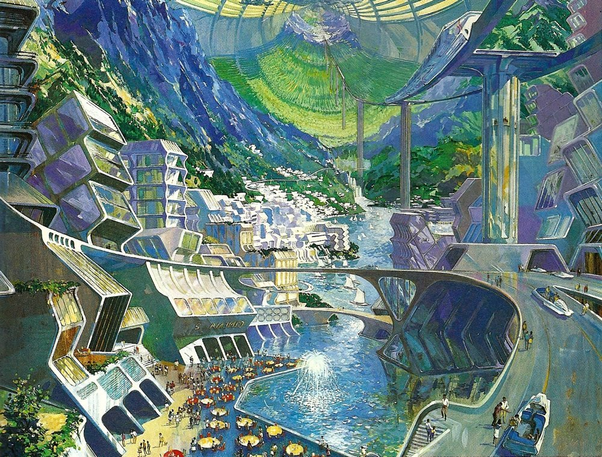
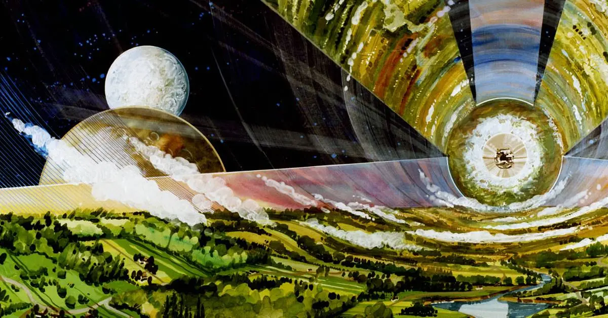
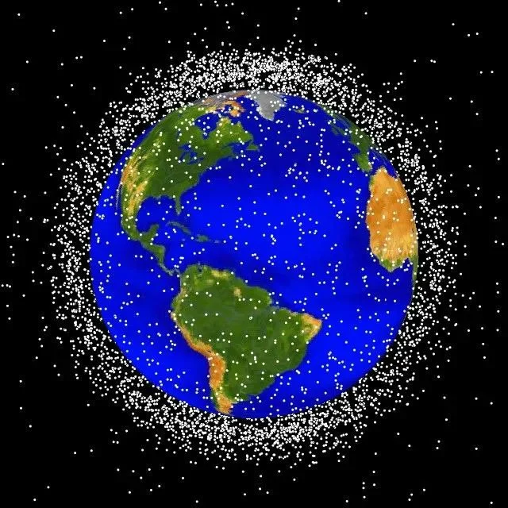
Space debris is becoming a serious global issue. Defunct satellites and rocket fragments pose collision risks. Space sustainability focuses on responsible satellite design and debris removal technologies. Projects related to Orbital Cleanup aim to keep Earth’s orbit safe for future missions.